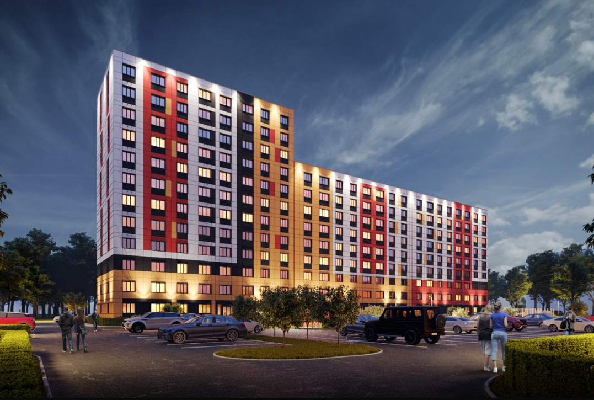

Aniskin
Graduated from
Pickering College
in Newmarket, Ontario in 2022 — currently completing studies in
Architectural Technology
at Humber College, with graduation expected in
2026.
Passion lies in
designing, planning,
and adapting spaces to meet the needs of the people who use them.
Tools — Revit,
AutoCAD, Twinmotion,
Adobe Suite,
Microsoft Office, HTML, GDScript — and whatever else brings an idea to life.
Skills &
Tools
Selected
Work
Academic and professional projects. Scroll right to explore each one.
Reuse
Following our analysis of Hyde Park Public School, located at 72 The Queensway, Barrie, ON L4M 7J3, were identified a significant opportunity to address the underutilization of school facilities. Due to the region’s declining birth rate, approximately 30% of the school’s space remains underutilized. The research further indicates that the surrounding neighborhood lacks a dedicated gym or athletic center. To maximize the use of available resources, we propose repurposing classrooms FDK1, FDK2, FDK3, and FDK4 into a community gym facility.

Center
A neighbourhood hub integrating flexible programming spaces, a library wing, and outdoor terraces. The building section steps down toward the adjacent park, dissolving the boundary between interior and landscape.
Plaza
A micro-scale urban intervention reclaiming a neglected transit interchange. Parametric canopy structures shade a new market street, while planted bioswales manage stormwater and define pedestrian corridors.
Reuse
Conversion of a former industrial warehouse into mixed-use artist live/work lofts. Existing structural steel is celebrated and extended with a new glass addition, creating dialogue between eras.
Beyond
Studio
Competitions, workshops, and extracurricular explorations outside the academic curriculum.
Student Innovation Competition
Designed for a furniture competition focused on mood-boosting design, this unit-based shelf uses Formica laminate and Fenix NTM. The modular design balances functionality, aesthetics, and user experience, meeting all competition requirements.
View full project →
Detailing Workshop
Intensive three-day workshop with certified Passive House designers, covering thermal bridge elimination, airtightness strategies, and mechanical system integration.
Student Challenge
Collaborative team competition sponsored by the Canadian Institute of Steel Construction. Our team designed a long-span pedestrian bridge using innovative weathering steel members.